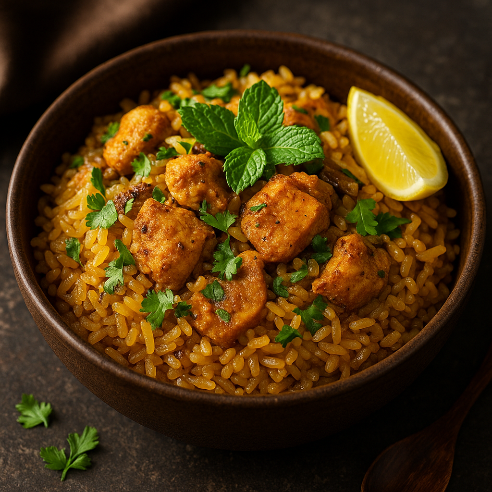

üîç TL;DR
This Konjac Chicken Biryani combines spicy chicken with Konjac rice for a delicious low-carb Indian meal. Great for keto and diabetic diets.
üóÇ Table of Contents
üçñ Why Konjac Chicken Biryani?
This biryani is perfect for those seeking flavor without the guilt. Traditional biryani is heavy on rice and carbs, but this version uses Yamaki Konjac Rice to deliver all the taste and none of the heaviness.
üßÑ Ingredients
- 200g Yamaki Konjac Rice
- 200g boneless chicken (cubed)
- 1 tbsp ghee or olive oil
- 1/2 tsp cumin seeds
- 1 bay leaf, 2 cloves, 2 cardamoms
- 1/2 cup sliced onions
- 1 tsp ginger-garlic paste
- 1/2 tsp turmeric
- 1/2 tsp red chili powder
- 1/2 tsp garam masala
- 1/4 cup chopped tomatoes
- 2 tbsp curd (yogurt)
- Salt to taste
- Fresh mint and coriander
- Lemon wedges for garnish
ü뮂Äçüç≥ Instructions
- Prep the rice: Rinse and dry-roast Konjac rice for 4–5 minutes.
- Marinate chicken: Mix chicken with yogurt, turmeric, chili powder, and salt. Set aside for 10 minutes.
- Cook base: Heat oil, add whole spices and sliced onions. Sauté until golden.
- Add chicken: Stir in ginger-garlic paste and marinated chicken. Cook until chicken is tender.
- Tomato & spice: Add chopped tomato, garam masala. Simmer for 3–4 minutes.
- Combine: Gently fold in Konjac rice. Let everything heat together for 2 minutes.
- Garnish: Top with mint, coriander, and lemon juice. Serve hot.
üìã Recipe Summary
Prep time: 15 mins | Cook time: 20 mins | Serves: 2
❓ FAQs
Q: Can I skip curd?
Yes, but it adds creaminess and helps tenderize chicken.
Q: Is this suitable for weight loss?
Absolutely! High protein, low carb.
üìå Want to stock this product? Become a Yamaki partner.